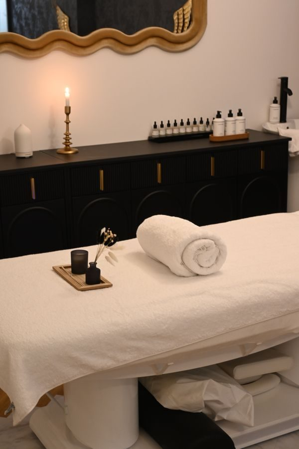

Massage therapy in Mobile
Therapeutic massage for pain and stress
Quiet Mind Massage offers therapeutic neuromuscular massage for pain and stress management in Mobile, with yoga instruction from founder Ginger Dunaway.
Massage therapy in Mobile
Quiet Mind Massage offers therapeutic neuromuscular massage for pain and stress management in Mobile, with yoga instruction from founder Ginger Dunaway.
Quiet Mind Massage sits at 2158 Government Street in Mobile. The practice centers on therapeutic neuromuscular massage for pain and stress management, and founder Ginger Dunaway also teaches yoga.


2158 Government St, Mobile, AL
Tuesday to Friday, 9:00 AM to 6:00 PM; Saturday, 9:30 AM to 1:00 PM